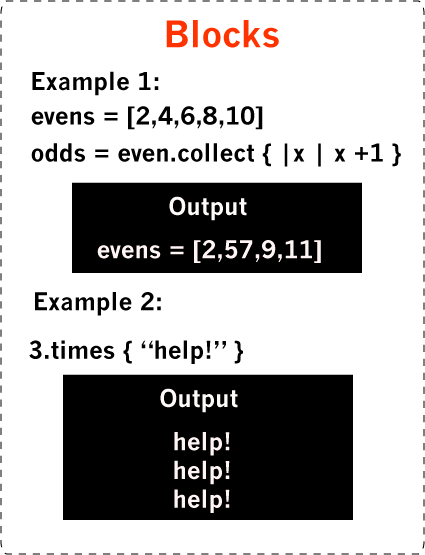
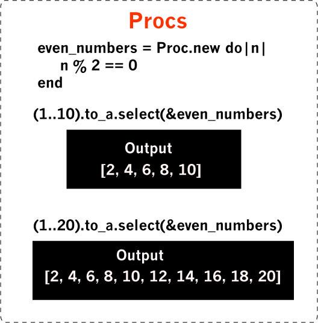
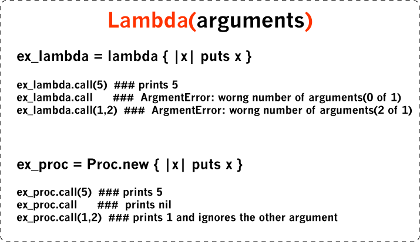

| Blocks | | Procs | | Lambdas |
Blocks, Procs and Lambdas are ruby closures that are very useful. In programming languages, closure are like methods whose returned values can be assigned to variables to invoke the original code. In this post I will discuss how blocks, prods and lambdas work, how they differ from each other and when to use them.
Block: Blocks are an excpetion to the rule that everything in ruby is an object. Blocks are not objects, they are just a piece of code that can executed. Blocks can’t be saved to variables and do not have the abilities of objects. Blocks use curly braces or do and end to hold their code. A very easy way to remember blocks is to think of them as a method without a name or an undefined method. Blocks are syntactically simple and very useful. There are a number of ruby methods that take blocks. Instead of using the tedious "for loop" to iterate you can use each with a block to iterate through an array. Another simple use of blocks is using times to loop and print a statement or message. When you iterate an array using blocks you can pass an argument. The each loop will visit each element in the array and call the block on every element in the array.
Proc: Blocks are very simple and convenient. However, If you needed to use a block multiple times, you would have to rewrite the code every time you use it. This leads to repetition of the code. Ruby has a way of saving a block as an object so you don't have to rewrite by using Procs. Procs is a way blocks can be saved as an object and reused, helping keep your code DRY. Also, since procs are objects, they have all the abilities of objects. The only difference between a block and a proc is that a proc is a saved block that can be reused.
Lambda: Lambdas are very similar to procs but unlike procs they check the number of arguments passed. This means a lambda will throw an error when the number of arguments are incorrect, but a proc will ignore and assign nil to the missing argument. Another important difference between procs and lambdas is, when a lambda returns it passes control back to the method, in case of procs it returns without going back to the method.
